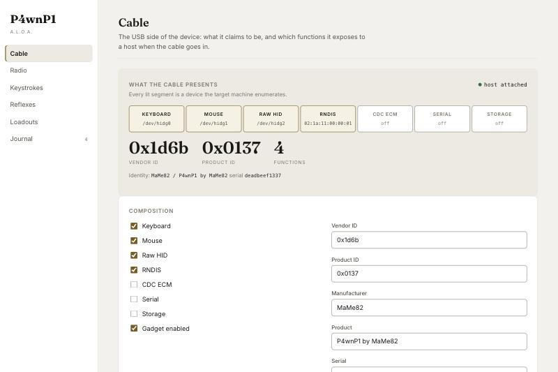
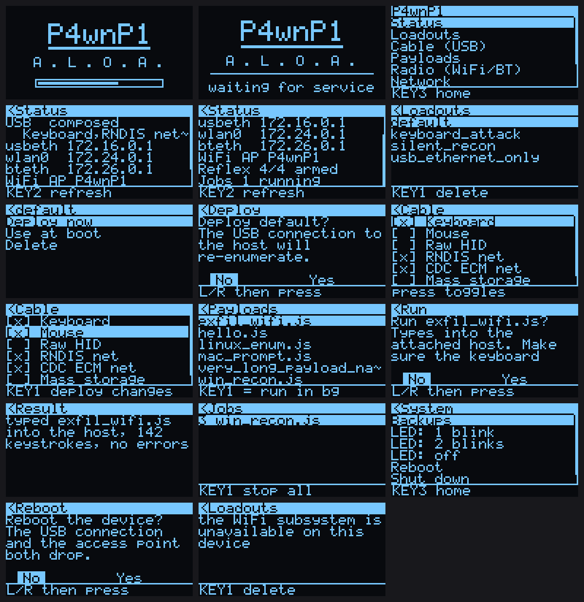

P4wnP1 A.L.O.A.
A Little Offensive Appliance
A Raspberry Pi that pretends to be USB devices. Plug it into a computer and that computer sets it up as a keyboard, a network adapter or a USB stick, without asking anyone. Drive it from a web console, or from a screen and joystick on the device itself.
Two ways to drive it
A console in a browser, and one in your hand
The web console is reached over the USB cable the device is plugged into, or over the access point it brings up. The OLED console needs neither — no laptop, no network.

Named for what it does
Cable is what the USB side presents. Keystrokes is what gets typed into the host. Reflexes are the rules it follows with nobody at the keyboard. Not “Dashboard” and “Settings”.
It tells you what it cannot do
A board with no WiFi says so. A USB function that will not deploy explains why and offers the page that fixes it. The device never claims a capability it does not have.

- up / downmove the selection
- KEY1the action named on the bottom line
- right, pressenter or confirm
- KEY2refresh
- leftback
- KEY3home
Try the OLED console with no hardware
make oled-sim runs the whole interface in a browser against a fake device —
the same UI, fonts, menus and state machine the hardware runs, with a PNG for the panel
and buttons for the stick. No Pi, no HAT, no SD card.
Images
Four builds, two of them with a screen
Built from Raspberry Pi OS Lite (Debian 13) by GitHub Actions, mounted and inspected before publishing. The plain images are verified to contain no OLED binary, unit or SPI line, so the difference between the variants is a property of the file rather than of its name.
| Image | Boards | OLED |
|---|---|---|
…-armhf.img.xz | Pi Zero, Pi Zero W, Pi 1 | no |
…-arm64.img.xz | Pi Zero 2 W, Pi 3, Pi 4, Pi 5 | no |
…-oled-armhf.img.xz | Pi Zero, Pi Zero W, Pi 1 | yes |
…-oled-arm64.img.xz | Pi Zero 2 W, Pi 3, Pi 4, Pi 5 | yes |
Set a password before you flash
The image ships no usable account. Set a username and password in
Raspberry Pi Imager and the device uses that. Skip it and first boot generates a
per-device password, written to p4wnp1-credentials.txt on the boot
partition, where you can read it by putting the card back in your laptop.
Images up to v0.3.0 shipped a shared SSH password. If you flashed one of those, replace it.
# verify, flash, then plug into the DATA port (the inner one on a Zero) sha256sum -c P4wnP1-ALOA-<version>-armhf.img.xz.sha256 xz -d P4wnP1-ALOA-<version>-armhf.img.xz sudo dd if=P4wnP1-ALOA-<version>-armhf.img of=/dev/sdX bs=4M conv=fsync status=progress # over the USB ethernet link the device brings up ssh p4wnp1@172.16.0.1 sudo cat /root/INITIAL_CREDENTIALS.txt # console password + WiFi PSK, per device
Then open http://172.16.0.1:8000.
Honesty
What is tested, and what is not
Being specific about this matters more than a feature list. This is a security tool, and a capability claimed but not checked is worse than one that is absent.
Checked by automation
- 60 access-control checks, each an attack that must fail
- Every one of the 83 RPCs called against the real binary
- The service started and exercised end to end, 29 checks
- The console driven in a real browser against the real service
- 41 OLED tests: SH1106 addressing, debounce timing, 20,000 random button presses
- Every image mounted and inspected before it is published
- Every field both clients send or read checked against the
.proto
Checked on real hardware
A Raspberry Pi Zero W with a Waveshare 1.3inch OLED HAT, flashed from
the published image and plugged into a laptop.
tools/hardware-check.sh reports 28 of 28.
- It boots, and the panel lights: splash, menu tree, joystick navigation
- The USB gadget enumerates on the host — CDC ECM, RNDIS, keyboard, mouse
- The device's own DHCP server hands the laptop an address
- hostapd brings the access point up:
AP_UP, on air, channel 6 - Every sampled RPC refuses an anonymous caller; cross-origin and a rebound
Hostboth refused; a wrong password costs 3–4 seconds every time - A HIDScript written, run, and its result read back
- All eight HAT controls read as idle inputs, and every one registers a press at the pin
- The AP pre-shared key appears nowhere in the journal — checked by grepping for the actual secret, which is how a real leak was found and fixed
- Keystroke injection into a real host: a payload typed into a laptop over the cable, and the line arrived
- The panel mirrored and driven over HTTP — the Cable screen navigated from a browser, USB functions deployed, the link back in three seconds
Still not verified
That Bluetooth pairs. That mass storage or the serial function work. That the trigger engine fires on real events. That any of it survives the cable being pulled mid-write.
If you are evaluating this for real work, boot it on a Pi and check those yourself — the script does the other twenty-eight for you.
KNOWN_ISSUES.md tracks every finding, what was fixed, and what is still open — including the shared SSH password that shipped in earlier images, and the symlink escape that let the file API write anywhere as root.
From source
Build it yourself
Everything cross-compiles from macOS or Linux. No Pi required to build.
make verify # every gate: tests, attack suite, render, contrast, vet make oled-sim # the OLED console in a browser, no hardware make image # four flashable images, via Docker
Releases are built by GitHub Actions on a four-way matrix and uploaded straight to the release, so what you download was produced by a machine you can read the configuration of.